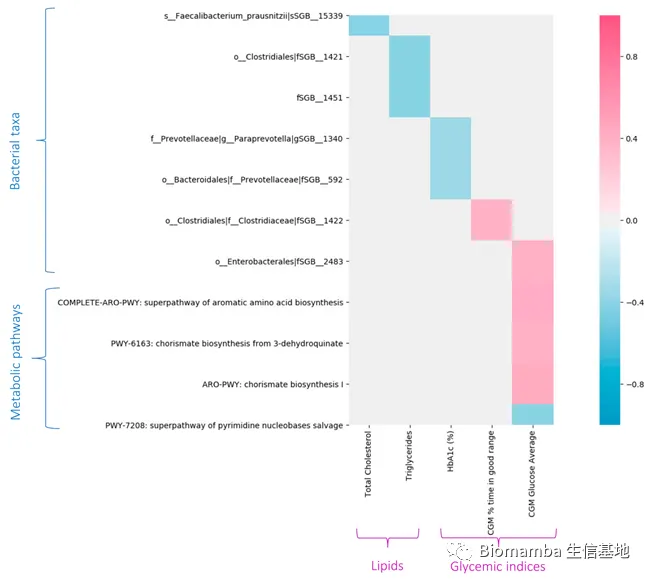
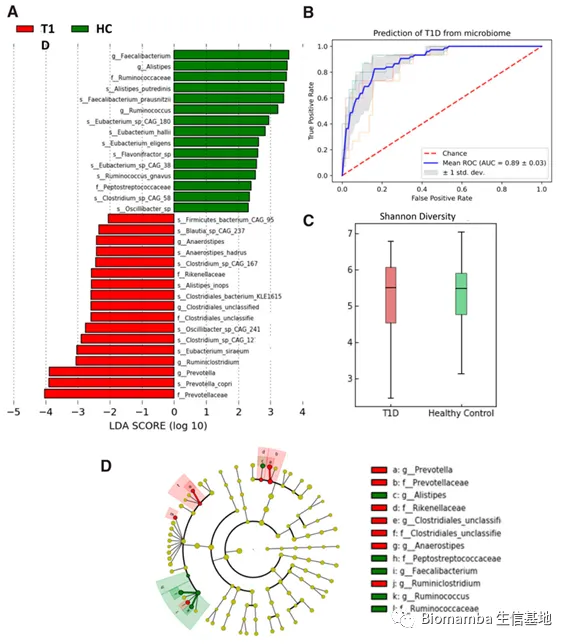
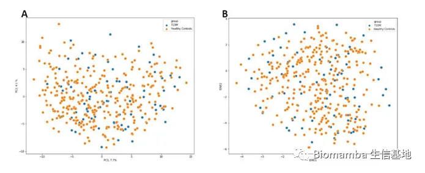
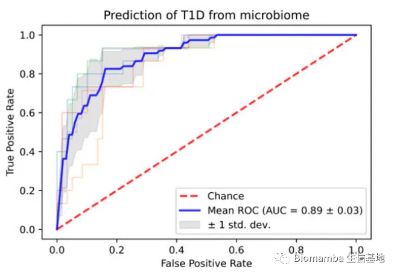
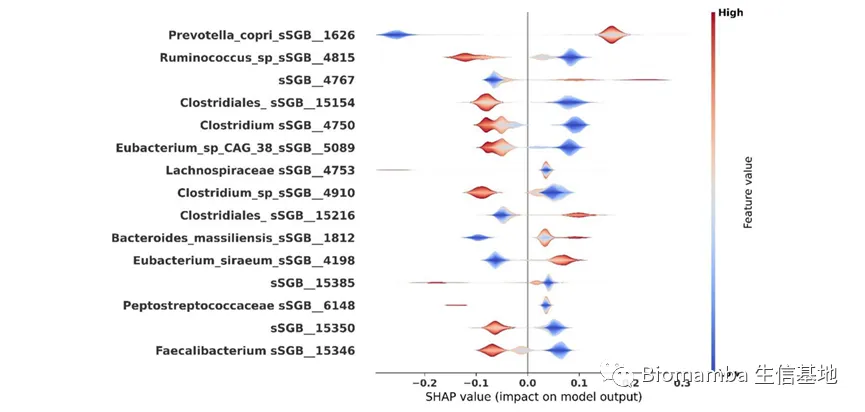

成年T1D患者肠道微生物与宿主血糖
原文：https://mp.weixin.qq.com/s?__biz=MzAwMzIzOTk5OQ==&mid=2247503129&idx=2&sn=1f99f20cca5335791e012f586ef33047&chksm=9b3cb449ac4b3d5f620ebb02bbe9b473638b76b49605f3e6cf0fb3afab0b693f287fef42f5ce#rd 合集：文献速递
Biomamba荐语
今天分享的是一篇发表在《Diabetes Care》(IF=17.1)上题为"The Gut Microbiome of Adults With Type 1 Diabetes and Its Association With the Host Glycemic Control."的文章，主要的实现方式为扩增子测序，所以不意外，这是一个大样本量的临床性研究，分析手段也比较简单，很好上手。作者也贴心的公开了代码：
https://github.com/Nastyagodneva/T1D_Micro biome
doi:
10.2337/dc21-1656
链接：
https://doi.org/10.2337/dc21-1656
Abstract
● 目的● 之前研究证明了肠道微生物组成与T1D发病之间的关系。但是微生物的组成和功能与长期患有T1D病人或者宿主血糖的控制是不清楚的。● 研究设计与方法● 74份14.6±9.6年T1D史的成年T1D病人的粪便样品，并将其微生物组成与功能与相对应的296份年龄匹配（1:4）的健康对照进行对比。 进一步分析了微生物分类与血糖控制指标之间的关联，这些指标源自连续葡萄糖监测测量和血液测试，并构建了预测模型，该模型仅将微生物组特征作为输入来评估微生物组成的区分能力，以区分来自对照受试者或 T1D 个体。**************● 结果● 用预测算法发现：与对照组相比，T1D患者的微生物具有明显的区分。分析显示T1D病人中有一些菌群有更高的评分，包括Prevotella copriand和Eubacterium siraeum，而在对照组中Firmicutes bacterium、Faecali bacterium和prausnitzi显示更高的评分。在功能方面，T1D中的几个代谢通路水平明显更低。发现一些菌群与代谢通路、宿主血糖控制具有相关性。● 结论● 分析显示作者发现了T1D病人与健康人群存在明显的微生物区别，并发现微生物分类、代谢通路和血糖控制相互间的联系。**********
Introduction
T1D是一种常见的发于儿童和成年人的慢性病。过去十年里，T1D的发生率明显增加了，尤其是在儿童中。虽然存在基因易感性，但是平均只有不到10%的基因易感性个体会发生T1D。所以环境因素对于T1D的发生发展具有重要作用，包括病毒感染、营养因素。肠道菌群组成也被强调为T1D的风险因素之一，有一些研究已经证明了肠道菌群与T1D之间存在关系。已被报道的肠道菌群与T1D之间的联系：1）肠道菌群失调介导的免疫失调（肠道菌群影响免疫）；2）肠道渗漏：在 T1D 的人类和动物研究中都观察到结构性黏膜改变和肠道功能障碍。近年来，大量文章报道了肠道菌群与T1D之间的关系，但是大部分研究聚焦于疾病发病机制上，而迄今为止只有少数研究调查了具有长期诊断的个体的微生物组组成，而且这些研究大多是在小群体中进行的，并使用了各种不同的计算分析方法。此外，虽然关于微生物组在正常和受损血糖反应中的调节作用的证据正在动物模型和人类中积累，但关于微生物对于长期T1D的血糖调控的作用了解的很少。因此，作者分析了患有T1D至少1年的病人微生物组成和功能，并探讨微生物分类、功能途径和血糖维稳之间的关系。************
Results
●1 微生物菌株、功能通路和临床表型之间的相关性
● 图2展示了肠道菌株、功能途径和临床指征的相关性：
（1） 微生物与血糖指征：Prevotellaceae species SGB592 、SGB1340与糖化血红蛋白（HBA1c）呈负相关；Enterobacterales species(SGB2483)与血糖均值呈正相关。
（2） 微生物与脂质：Faecalibacterium prausnitzii species (SGB15339)与甘油三酯水平呈负相关；
（3） 代谢通路与血糖：芳香酸生物合成相关的途径 (COMPLETE-ARO-PWY)、3-脱氢喹酸的分支酸生物合成(PWY-6163)、和分支酸生物合成 I (ARO-PWY) 与血糖均值呈正相关；嘧啶核碱基补救途径（PWY-7208）与血糖均值呈负相关。

图2. 肠道菌株、功能途径和临床指征的相关性
● 2 T1D个体中的微生物组成
（1） α-多样性：健康组与T1D组的-多样性无明显差异（图3）；
（2） 物种丰富度和分类概况的厚壁菌门与拟杆菌门的比率在各组之间没有显着差异（补充表3）；
（3） LefSe分析显示，共有 17 个细菌分类群在 T1D 个体中具有显着更高的 LDA 评分（Prevotella copri, Eubacterium siraeum, Alistipes inops），而在健康组中共有 15 个细菌分类群具有显着更高的 LDA 评分（Firmicutes bacterium, Alistipes putredinis, Faecalibacterium prausnitzii, Ruminococcus gnavus）；
（4） 主成分分析结果：两组之间未发现明显差异（补充图2）；
（5） 功能水平分析显示，包括L-谷氨酸和L-谷氨酰胺的生物合成、L-鸟氨酸的从头生物合成、以及己糖醛酸和己糖醛酸降解的超通路（superpathway）在患有T1D的成人中显着降。

图3. 成人微生物组组成

补充图2.主成分分析
● 3 T1D 个体的微生物特征分类
● 作者构建了一个仅基于微生物特征的预测模型，并使用交叉验证方案来验证模型。该模型的判别性能的 AUC 为 0.89 ± 0.03，排列 P < 0.001（图 3B）。对T1D预测最有影响力的微生物类群是Prevotella copri；另外，Ruminococcus，对健康状态的预测的影响力较大（补充图3）。

图3B. 区分T1D患者与健康对照的预测模型

补充图3. 用于区分 T1D 个体与健康对照的预测模型
Materials and Methods
● 1. 病人纳入标准：筛选过程见图1，最终进入分析的病人年龄：18-70 岁， T1D 诊断时间 > 1 年，同时使用连续血糖监测 (CGM) 和连续皮下胰岛素输注装置；
●** 2.**使用拭子和 OMNI 基因-GUT（OMR-200；DNA Genotek）粪便收集试剂盒进行微生物组采样；使用 Tecan 自动化平台优化的 MagAttract PowerSoil DNA 提取试剂盒 (QIAGEN) 纯化宏基因组 DNA。使用 Nex tera DNA library prep (Illumina) 制备下一代测序文库，并在 NovaSeq 测序平台 (Illumina) 上进行测序。使用 100 个碱基对单端读数进行测序，每个样品的读数深度为 1000 万次。
●3. 定义为葡萄糖值分别<70 mg/dL (3.9 mmol/L) 和 >180 mg/dL (10 mmol/L)，范围内的时间，定义葡萄糖值在 70 和 180 mg/dL (3.9–10 mmol/L) 之间的时间，以及作为葡萄糖测量值的变异系数 (CV) 可变性
● 4. 基于微生物特征的 T1D 预测模型 为了评估微生物组成对 T1D 的判别力，构建了一个基于 XGBoost的预测模型，该模型仅以微生物群落特征作为输入。该模型可以捕捉细菌之间的非线性相互作用，并且之前已被证明优于其他分类人类微生物组数据的方法。通过使用五重交叉验证中生成的曲线计算接收器操作特征曲线的平均值和标准差。此外，作者验证了当随机交换目标标签时，性能反映了随机预测，因此曲线下面积 (AUC) 非常接近 0.5，作为附加控制。使用 SHAP (SHapley Additive exPlanation) 分析了特征属性，以探索模型的可解释性。
●** 5.**由于知情同意的限制，临床数据不能共享。
● 6. 分析代码可在 https://github.com/Nastyagodneva/T1D_Microbiome 获得。
文献来源
Shilo S, Godneva A, Rachmiel M, Korem T, Bussi Y, Kolobkov D, Karady T, Bar N, Wolf BC, Glantz-Gashai Y, Cohen M, Levin NZ, Shehadeh N, Gruber N, Levran N, Koren S, Weinberger A, Pinhas-Hamiel O, Segal E. The Gut Microbiome of Adults With Type 1 Diabetes and Its Association With the Host Glycemic Control. Diabetes Care. 2022 Mar 1;45(3):555-563. doi: 10.2337/dc21-1656. PMID: 35045174.
补充材料：
https://doi.org/10.2337/figshare.17430323.
如果大家在学习过程中遇到好文想要分享的，也欢迎联系我投稿。
往期回顾
文献阅读（一）、人类肠道微生物的代谢网络与疾病 文献阅读（二）、肥胖与减肥干预状态下的肠道微生物组及血清代谢物变化 文献阅读（三）、单细胞测序解析糖尿病肾病中肾小球的动态变化 文献阅读（四）、单细胞测序技术解析健康人与T2D患者的胰岛差异 文献阅读（五）、只有5页的文章（IF=7.307） 文献阅读（六）、小鼠全肾单细胞测序开篇之作 文献阅读（七）、一篇不花钱就能白嫖的文章文献阅读（八）、不会吧不会吧，Nature都能白嫖？文献阅读（九）、一文了解GSVA原理 文献阅读（十）、DKD 这一篇就够了文献阅读（十一）、高氧下小鼠肺发育损伤的ScRNA图谱 文献阅读（十二）、IgAN & STRT-Seq 文献阅读（十三）、老树开新花——EGFR、肿瘤、免疫+scRNA-Seq 文献阅读（十四）、肿瘤科医师狂喜,15分RNA修饰数据挖掘 文献阅读（十五）、癌前基质细胞驱动BRCA1肿瘤发生 文献阅读（十六）、肠道微生物群&肾衰竭文献阅读（十七）、肠道菌群&代谢物&脂肪肝癌变文献阅读（十八）、紧跟生信"钱"沿,胰腺癌&免疫多模态图谱 文献阅读（十九）、原发头颈癌和肿瘤转移微生态

如何联系我们

 公众号后台消息更新不及时，超过48h便不允许回复读者消息，这里给大家留一下领取资料、免费服务器(有root权限的共享服务器,空空的计算节点任意穿梭)的微信号[Biomamba_yunying] ，方便各位随时交流、提建议(科研任务繁重，回复不及时请见谅，备注来意会优先通过)。此外呼声一直很高的交流群 也建好了，欢迎大家入群讨论：永久免费的千人生信、科研交流群
公众号后台消息更新不及时，超过48h便不允许回复读者消息，这里给大家留一下领取资料、免费服务器(有root权限的共享服务器,空空的计算节点任意穿梭)的微信号[Biomamba_yunying] ，方便各位随时交流、提建议(科研任务繁重，回复不及时请见谅，备注来意会优先通过)。此外呼声一直很高的交流群 也建好了，欢迎大家入群讨论：永久免费的千人生信、科研交流群
大家可以阅读完这几篇之后添加给生信入门初学者的小贴士 如何搜索公众号过往发布内容

 您点的每个赞和在看，我都认真当成了喜欢
您点的每个赞和在看，我都认真当成了喜欢